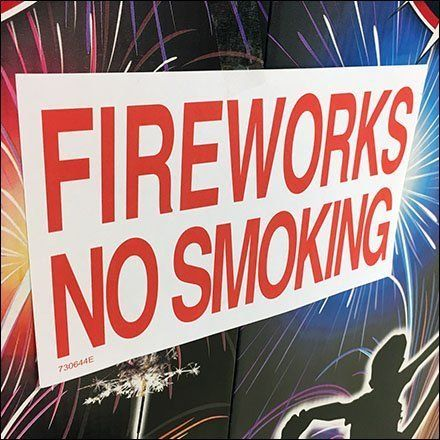

Credits
Credits
There are various ways of reducing air pollution in Gurgaon. For instance, we can educate the farmers about the alternatives to burning crops and its health impacts on their families, we can switch over to public transport, drive campaigns for people to stop using fireworks and encourage them to quit smoking.
One of the ways we can help reduce the amount of air pollution is by switching over to public transportation. The main reason why switching over to public transportation can help is because when we use cars, they emit a lot of harmful gasses such as CO2 which can harm people and the environment. It would be better and safer to use public transportation if someone is traveling. Another one of the things could be that you can switch from a petrol or diesel car to an electric car. Using electric cars would be a very efficient solution and would also promote sustainability in India.
Another one of the ways we can help reduce air pollution is by preventing fireworks and smoking. It is estimated that around 8 million people die because of smoking each year and the amount of CO2 released by smoking is around 84 million tonnes. Not only will smoking and fireworks lead to pollution, but it would also lead to more severe health problems like lung cancer and also problems like deforestation.Reducing smoke in the air will not just save us humans and reduce the amount of pollution, but it would also save our environment.
 Credits
We can educate the farmers by explaining to them that their practices of burning crops will not benefit them at all. We can tell them that burning crops can contribute to the increase in the amount of air pollution in Delhi. We can tell them that it would impact them the most, as they are living in the most polluted areas of Delhi and if they keep burning their leftover crops it would have a negative effect on their health and their families health. Once they would be able to understand this method, then the pollution might start decreasing and the lives of the farmers and their families would not be impacted that much at all.